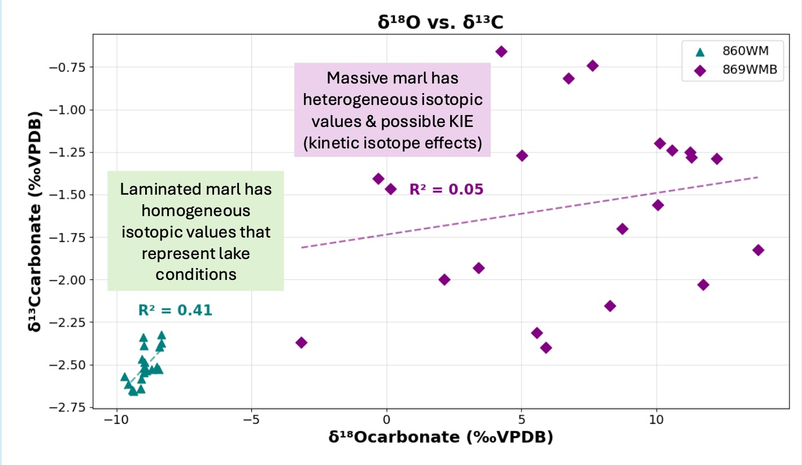
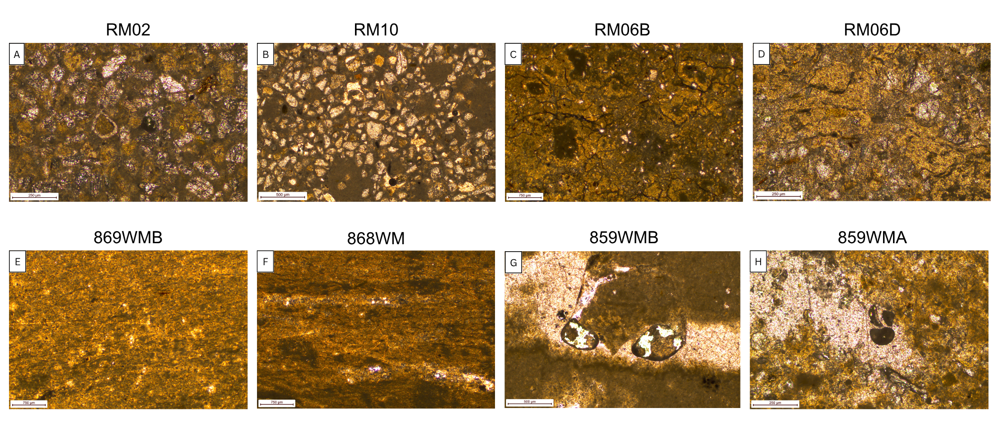

Carbonate Isotope Geochemistry
I analyze carbonate material for bulk (δ13C, δ18O) and clumped isotopes (Δ47, Δ48) using a Nu Perspective with NuCarb for dual-inlet based carbon and oxygen isotope measurements of CO2.

Carbonate Petrography & Facies Analysis
This technique allows me to look for micro-scale biological processes and diagenetic alteration in lacustrine carbonate samples.

Petrography & Facies Analysis
Documenting micro-scale textures and processes that shape carbonate facies diversity.

Data Science in Earth Systems
Applying statistical and computational tools to geochemical and geological datasets.